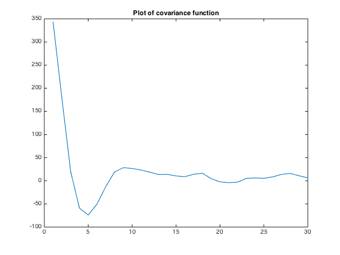
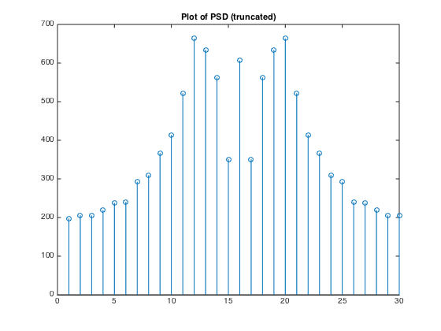
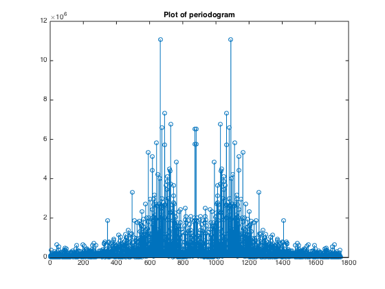

Contents
Part A
clear; close all; load('hw8_data'); Kx = zeros(1,length(olr1)); meanOlr = mean(olr1); for m = 0:length(olr1)-1 for i = 0:length(olr1)-m-1 Kx(m+1) = Kx(m+1) + (olr1(i+1)-meanOlr)*(olr1(i+1+m)-meanOlr); end Kx(m+1) = Kx(m+1)/(length(olr1)-m); end figure; plot(Kx(1:30)); title('Plot of covariance function'); % We can see some periodic behavior from the covariance function. If we % look around the point where m=5, we see that at around a time step of 5 % the values of the two end points will be negative of each other. This % means that on average, throughout the signal, if we look at the value at % some t then at t+5 that value will be negative of the value at time t. % This exactly shows cyclic behaviour. We can say that the MJO roughly has % a period of 5.
Part B
psd = fftshift(abs(fft(Kx(1:30)))); figure;stem(psd); title('Plot of PSD (truncated)'); % Yes we can see that there is a peak in the psd around 0.7675 rad/s which % which is "roughly" like a cosine which would correspond to cyclic % behaviour in the time domain. This directly agrees with the cyclic % behavoiur we see in part a.
Part C
periodogram = fftshift(abs(fft(olr1)).^2); figure; stem(periodogram); title('Plot of periodogram'); N = length(olr1); [maxval, maxindex] = max(periodogram(N/2:end)); radial = maxindex/(N/2)*pi; % Again there is a peak in the periodogram of the whole sample path around % the radial frequency of 0.7711. This shows that only looking at a block % of the sample path (truncated part of sample path) can give a pretty good % approximation to the data. Overall, it has a very similar shape to the % PSD we calculated in b) and also has simiar key characteristics. Yes this % roughly agrees with our derivation in 5) which shows that as T->infinity % the periodogram converges to the PSD.